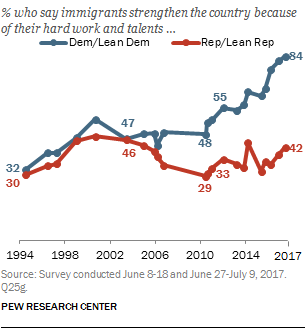

2018년 7월 18일
오지(Ozy)1 (그리고 다른 이들)은 협력을 가로막는 장벽으로서 근본적인 가치관의 차이에 대해 이야기한다.
그들의 모델에 따르면(내가 이해한 바로는), 의견 불일치에는 적어도 두 가지 종류가 있다. 첫 번째는 가치는 공유하지만 사실 관계에 대해 의견이 갈리는 경우다. 예를 들어, 당신과 나 모두 제3세계(Third World)를 돕고 싶어 할 수 있다. 하지만 당신은 대외 원조가 제3세계에 도움이 된다고 믿는 반면, 나는 그것이 부패한 정부를 지탱하고 경제적 자립을 저해한다고 믿는다. 우리는 대외 원조의 실제 효과를 조사하는 동안 계속 동맹 관계를 유지해야 하며, 조사가 끝난 후에는 우리의 의견 불일치도 사라질 것이다.
두 번째 사례에서 당신과 나는 근본적으로 서로 다른 가치관을 가지고 있다. 가령 당신은 제3세계(Third World)를 돕고 싶어 하지만, 나는 국가가 오직 자국민만을 돌봐야 한다고 믿는 식이다. 이 경우 해결책은 없다. 당신은 나를 외국인들이 굶어 죽기를 바라는 냉혈한 괴물로 여기고, 나는 당신을 지구 반대편의 이름 모를 사람들을 돕기 위해 내 이웃의 돈을 훔치려는 냉혈한 괴물로 여긴다. 실용적인 이유로 내전을 벌이지 않는 것에는 합의할 수 있겠지만, 그렇다고 말을 돌려가며 우리가 적이 아니라고 가식 떨 필요는 없다. 오지(Ozy)는 다음과 같이 썼다(임의로 편집됨, 원문을 참고할 것).
보수주의자의 관점에서 본다면, 나는 도저히 이해할 수 없는 도덕적 돌연변이일 것이다. 하지만 내 관점에서 보면, 보수주의자들은 불의한 권력에 아첨하거나, 부유하고 자격 없는 자들을 돕거나, 혹은 본인들이 혐오스럽다고 생각하는 타인의 성생활을 막기 위해서라면 세상에서 실제로 중요한 가치들—정의, 평등, 행복, 고통의 종식—을 기꺼이 희생하는 사람들이다.
나는 타협의 여지가 있다고 느낀다. 전면전은 모두에게 불쾌한 일이 될 테니까. 하지만 근본적으로 보자면... 보수주의자라는 집단이 나와 같은 목표를 가지고 있지만 단지 추구하는 방법이 다를 뿐이라는 말은 사실이 아니다. 내가 심리학적 증거들을 해석한 결과는 이렇다. 나의 가치 체계에서 볼 때, 이 나라 인구의 절반가량은 악하며, 그들의 가치 표현을 수치스럽게 만들고, 그들의 자녀를 세뇌시키며, 그들의 가치가 더 이상 이 땅에 존재하지 않는 미래를 위해 노력하는 것이 나의 이익에 부합한다. 세상일이란 원래 그런 법이다.
그리고 레딧(subreddit)의 GCUPokeItWithAStick가 남긴 댓글에서 발췌한 내용이다.
최소한, 만약 당신이 어떤 한 사람의 이익이 다른 사람의 이익보다 본질적으로 더 중요하다고 믿는다면(혹은 더 정교한 버전의 논의처럼, 윤리가 행위자 상대적이라고 믿는다면), 무언가 근본적으로 잘못된 것이다. 그리고 이것이 좌파와 우파를 가르는 핵심적인 차이라고 생각한다. 이런 의미에서의 우파가 되는 것은 완전히 옹호 불가능하며, 당신이 도덕적 진리라는 것을 규명하려는 시도를 포기해야 한다는 신호다. 왜냐하면 당신은 그것을 해낼 수 없기 때문이다.
이 입장에 대해 정당한 평가를 내리자면, 나 역시 사실과 가치의 구분(fact/value distinction)에 동의한다. 우리와 같은 가치관을 가진 사람에게 어떤 사실적 진실을 납득시키려 할 때 우리가 무엇을 하고 있는지는 개념적으로 매우 명확하며, 반면 누군가의 가치관을 바꾸는 일은 혼란스럽고 어쩌면 불가능할 수도 있다는 점에 동의한다.
하지만 나는 위의 논거들이 지나치게 단순하다고 생각한다. 특히 합리주의자(rationalists)들이 이런 식의 사고에 취약할 수 있는데, 우리는 흔히 에이전트(또는 AI)가 주어진 가치 함수(예: "클립 생산하기")를 가지고 그에 따라 행동을 생성한다는 경제학적 모델을 사용하기 때문이다. 이런 종류의 에이전트는 목표 함수가 다른 다른 에이전트와 정말로 공통 분모가 없다. 하지만 인간은 좀처럼 이런 식으로 작동하지 않는다. 설령 그렇게 작동한다 하더라도, 우리가 생각하는 방식인 경우는 드물다. 우리는 '우리'와 '그들' 사이에 정확히 일치하는 이분법적 가치 차이를 너무 성급하게 상상하며, 우리 주변에 존재하는 복잡하고 다층적인 가치 차이의 패턴을 인식하는 데는 너무나 느리다.
엘리저 유드코프스키(Eliezer Yudkowsky)는 당신의 적들은 본성적으로 악한가?에서 다음과 같이 썼다.
2001년 9월 11일, 19명의 무슬림 남성들이 미국에 타격을 입히기 위해 의도적인 자살 테러로 제트 여객기 4대를 납치했다. 그들이 왜 그런 일을 저질렀다고 생각하는가? 미국을 전 세계 자유의 등불로 보았지만, 자유를 증오하게 만드는 돌연변이적 기질을 타고났기 때문일까?
현실적으로, 대부분의 사람은 자신의 인생 이야기를 쓸 때 스스로를 악당으로 설정하지 않는다. 누구나 자기 이야기 속에서는 주인공이다. 적의 입장에서 본 적의 이야기는 결코 적을 나쁘게 묘사하지 않을 것이다. 만약 적을 나쁘게 보이게 만드는 동기만을 찾으려 한다면, 결국 적의 마음속에서 실제로 어떤 일이 벌어지고 있는지에 대해 완전히 틀린 결론에 도달하게 될 것이다.
그렇다면 9/11 테러범들의 머릿속에는 대체 무엇이 들어있었을까? 그들은 우리와 얼마나 많은 가치관의 차이를 가지고 있었을까?
납치범들이 나와 가치관의 차이가 전혀 없었을 가능성은 충분해 보인다. 만약 내가 와하비즘(Wahhabi Islam)의 문자 그대로의 진실을 믿었다면—이는 사실에 관한 믿음이다—죄 많은 무신론자의 서구 세계에 대해 상당히 우려했을지도 모른다. 서구의 죄악된 방식이 내 종교를 파괴하고 있으며, 내 종교가 독보적으로 사회에 유익한 삶의 방식을 담고 있다고 믿었다면—이 역시 사실에 관한 믿음들이다—나는 그것을 막고 싶었을 것이다. 그리고 충분히 극적인 테러 공격이 전 세계 사람들을 일으켜 세워 서구의 억압이라는 쇠사슬을 끊어내게 할 것이라고 믿었다면—또 다른 사실에 관한 믿음이다—나는 더 큰 선을 위해 기꺼이 자신을 희생했을지도 모른다. 만약 협력과 비폭력이라는 복잡한 플라톤적 계약이 작동하지 않는다고 생각했다면—일종의 사실에 관한 믿음이다—나의 도덕심은 더 이상 나를 억제하지 못했을 것이다.
하지만 물론 하이재커들에게는 수많은 가치관의 차이가 있었을지도 모른다. 그들은 미국인의 생명에는 아무런 가치가 없다고 믿었을지도 모른다. 혹은 고국의 종교가 참된지, 혹은 그 고국이 정말로 좋은 곳인지와는 상관없이, 고국을 위해 일격을 가하는 것 자체가 궁극적인 선이라고 믿었을지도 모른다. 어쩌면 그들은 신의 이름으로 행하는 모든 행위는 자동으로 정당화된다고 믿는 것일지도 모른다.
이 중 얼마나 많은 것이 사실인지는 전혀 알 수 없다. 하지만 나는 성급하게 결론을 내리는 것을 경계한다. 비행기 두 대를 추락시켰다는 사실만으로 그들이 비행기 추락 자체를 궁극적인 선(terminal good)이라고 믿는다고 추론하거나, 누군가 낙태에 반대한다는 이유로 그들이 단순히 여성 억압을 궁극적 가치라고 생각한다고 추론하고 싶지 않다. 혹은 살인을 저지른 사람들이 살인이 선하다고 주장하는 철학인 살인주의(murderism)를 믿는다고 추론하고 싶지도 않다. 내 생각에 대부분의 사람은 타인을 근본적으로 다르다고 너무 쉽게 치부해 버리는 경향이 있으며, 상대의 동기를 평가할 때 약간의 관용을 베푸는 것이 큰 도움이 될 수 있다.
하지만 그건 너무 쉬운 접근이다. 스스로 일으킨 비행기 추락 사고로 사망하지 않았고, 그저 자신의 가치관을 우리에게 말해줄 수 있는 사람들은 어떠한가? 처음의 예시인 해외 원조를 생각해보자. 나는 많은 고립주의자들이 우리가 외국에 돈을 써서는 안 된다고, 그리고 이것은 외국이 그 돈을 낭비할 것이라는 식의 어떤 사실적 믿음에서 비롯된 결과가 아니라 하나의 기본 원칙이라고 단언하는 것을 들어왔다. 한편, 나는 외국인을 우리 시민들과 정확히 똑같이 대우해야 한다고, 아니 그렇게 하지 않는 것이야말로 기본적인 자비심과 인류의 통합에 대한 모욕이라고 주장하는 사람들도 알고 있다. 이것이야말로 실제적인 가치관의 차이를 보여주는 강력한 사례가 아닌가?
이러한 논리에 맞설 수 있는 나의 유일한 반론은, 나를 포함해 거의 그 누구도 이 논리를 진지하게 받아들이거나 논리적 결론까지 밀어붙이지 않는다는 점이다. 세계 시민주의자(cosmopolitans) 중 그 누구가 메디케이드(Medicaid) 예산의 대부분을 (세계적 기준으로는 이미 충분히 건강한) 미국의 빈곤층으로부터 돌려, 1달러의 가치가 훨씬 더 크게 작용하는 아프리카의 클리닉 자금으로 지원해야 한다는 아이디어를 진지하게 지지하는 것을 본 적이 없다. 아마도 이는 단순히 정치적 편의주의 때문일 것이며, 만약 그런 계획이 통과될 수 있다고 생각했다면 더 많은 이들이 그 방안을 이야기했을지도 모른다. 하지만 그렇다면 그들은 자신들의 수가 매우 적으며, 자신들의 가치관 차이는 보수주의자들뿐만 아니라 그들 자신의 친구들, 그리고 같은 진영의 압도적 다수와도 존재한다는 사실을 깨달아야 한다.
지금 이 대목에서 배타적 보수주의자들이 비웃고 있을지도 모르겠지만, 나는 그들 중 일부가 자연재해를 입은 외국에 기부금을 보냈다는 사실을 알고 있다. 심지어 정부에 지원을 건의한 이들도 있었다. 미국 정부가 파괴적인 후쿠시마 쓰나미 생존자 구조를 돕기 위해 일본에 자원을 보냈을 때, 그 돈을 국내에서 쓰는 게 더 나았을 것이라고 말하는 사람은 아무도 듣지 못했다.
이런 문제들에 대해 일관된 가치관을 가진 사람은 극히 드물다. 그 이유는 누구에게나 원칙이라는 것이 자연스럽게 갖춰져 있지 않기 때문이다. 사람들은 자신의 실제 의견들이 뒤섞인 무원칙한 잡동사니 속에서 원칙을 추출해내고, 그 원칙을 따른다. 하지만 보통 사람들은 이 과정을 매우 느슨하게 수행하며, 기껏해야 "나에게 거짓말을 하는 건 나쁜 일이니까, 아마 거짓말은 일반적으로 잘못된 것이겠지" 정도의 원칙을 갖는 수준에 그친다. 심지어 도덕 철학자들조차 이를 완벽하게 해내지 못하며, 자신들의 원칙을 일관성 없게 적용하곤 한다.
(그렇다고 해서 일관된 원칙을 가진 사람들이 반드시 더 확고한 근거를 가졌다는 뜻은 아니다. 나는 연방제에 대한 관점이 어떻게 변하는지에 대해 자주 이야기해 왔다. 국가 정부가 동성 결혼에 반대했을 때, 보수주의자들은 연방 차원의 하향식 의사결정을 지지했고, 자유주의자들은 주 정부의 권리를 주장하며 시위했다. 그러다 국가 정부가 찬성 입장으로 돌아서자, 보수주의자들은 주 정부의 권리를 원하게 되었고 자유주의자들은 하향식 연방 결정을 원하게 되었다. 1995년에 "지금 보니 주 정부의 권리를 인정하는 것이 옳은 것 같으니, 설령 내 진영에 불리해지더라도 영원히 이를 지지하겠다"라고 말한 어떤 원칙주의적인 자유주의자를 상상해 볼 수 있을 것이다. 하지만 그녀의 신념 역시 결국에는 기본적으로 무작위한 우연에 의해 결정된 셈이다. 정부가 처음에는 동성 결혼을 지지했다가 나중에 반대로 돌아선 세상이었다면, 그녀는 정반대의 원칙을 가졌을 것이고 또 그것을 고수했을 것이기 때문이다.)
하지만 내 말은, 당신이 어떤 원칙을 말로 표현하느냐(“외국인도 우리 시민과 똑같이 대우해야 한다고 믿습니다!”)는 사실 그리 중요하지 않다는 것이다. 실제로 사람들이 외국인을 어떻게 대하는지는 매우 넓은 스펙트럼으로 나뉜다. 이를 종 모양의 정규분포 곡선으로 상상해 보자. 극우단에는 국내 시민에게 직접적인 도움이 되지 않는 한, 정부 예산이 해외로 나가는 것에 무조건 반대하는 극소수의 초일관적인 사람들이 있다. 중심 방향으로 조금만 이동하면, 겉으로는 앞서 말한 원칙을 믿는다고 하지만 쓰나미에서 일본 민간인을 구출하려는 영웅적인 노력에는 찬성하는 사람들이 나타난다. 곡선의 가장 불룩한 중앙 부분은, 충분히 사진에 잘 나올 법한(photogenic) 아이들에게 전달되기만 한다면 현재 수준의 대외 원조 정도는 원하는 사람들이다. 더 왼쪽으로 가면, 보통 약간 더 많은 원조와 개방된 국경을 지지하는, 지금 내가 이 토론을 나누고 있는 사람들이 있다. 그리고 극좌단에는 미국 정부가 메디케이드(Medicaid, 저소득층 의료지원 제도) 예산을 아프리카로 돌려야 한다고 생각하는 또 다른 소수의 초일관적인 사람들이 존재한다.
어떤 종형 곡선(bell curve)의 N 지점에 서 있다고 가정해 보자. 당신과 "근본적인 가치관 차이"를 가진 사람을 만나려면 얼마나 멀리 가야 하는가? 상대가 본질적으로 당신의 적이며, 토론이 불가능하고, 어떤 식으로든 싸워서 짓밟아야만 하는 존재가 되려면 얼마나 멀리 가야 하는가? 만약 그 답이 "어떤 차이라도 있다면"이라고 한다면, 안타깝게도 종형 곡선은 연속적이라는 점을 알려드려야겠다. 당신과 정확히 같은 입장에 있는 사람은 세상에 단 한 명도 없을지도 모른다.
그리고 이것은 대외 원조라는 단 하나의 문제일 뿐이다. 이처럼 갈등이 심한 문제가 수백, 수천 가지가 있다고 상상해 보라. 어떤 인간의 이익이 다른 이의 이익보다 더 중요하다고 믿는다면 그것은 "옹호 불가능한" 일이라고까지 주장하는 GCU(Global Concern Utilitarian)에게 신의 가호가 있기를. 그는(그라고 가정하겠다) 아내가 아플 때, 생판 남을 도울 때보다 더 정성껏 아내를 돌볼까? 이것은 상대를 곤경에 빠뜨리려는 '함정 질문'이 아니라, 우리가 도덕성을 어떻게 정립하는지에 대한 예시이다. A라는 사람은 생판 남보다 아내를 더 아끼면서, 동시에 아프리카의 빈곤층을 돕기 위해 소액의 기부금을 낸다. 그는 아내를 아끼는 마음을 '노이즈'로 치부하고, 아프리카 기부 경험을 확장해 "우리는 모든 사람을 평등하게 도와야 한다"라고 결론 내린다. B라는 사람 역시 생판 남보다 아내를 더 아끼며, 아프리카에 소액을 기부한다. 그는 아프리카 기부를 '노이즈'로 치부하고, 아내에 대한 마음을 확장해 "우리는 가장 가까운 사람들을 가장 먼저 챙겨야 한다"라고 결론 내린다. 각자가 도덕적 원칙을 설정하는 방식이 나중에 영향을 미치지 않으리라는 말이 아니다. 다만 그 영향은 주객전도된 결과일 뿐이다. 만약 A와 B가 서로를 바라보며 "나는 '모두-평등-주의자'이고 너는 '가까운-사람-우선-주의자'이니, 우리는 결코 서로를 이해할 수 없으며 철천지원수가 되어야 한다"라고 말한다면, 그들은 자신의 사고 과정을 묘사하는 데 사용하는 일련의 음절들에 지나치게 큰 의미를 부여하고 있는 것이다.
내가 왜 이렇게까지 유난을 떠는 것일까? 점진적이고 연속적인 가치 차이 역시 결국 가치 차이인 것 아닌가?
그렇다. 하지만 나는 (도덕적 기반 이론(Moral Foundations idea)과는 반대로) 소위 본토주의자라고 불리는 사람과 세계주의자라고 불리는 사람 모두, 본토주의적 본능과 세계주의적 본능을 아주 조금씩은 가지고 있을 것이라 생각한다. 그들은 자신의 원칙에 맞추기 위해 둘 중 어느 하나를 억누르고 있을지도 모른다. 본토주의자는 만약 자신이 세계주의적 본능을 조금이라도 인정한다면, 이웃집 아이들보다 굶주린 에티오피아인들이 더 중요하므로 그들을 돕는 대신 지역 커뮤니티 센터에서 봉사하는 일을 그만두라고 사람들이 강요할까 봐 두려워할 수 있다. 반대로 세계주의자는 가까운 사람들을 선호하는 본능이 있다는 점을 인정하는 순간, 외국인을 인간 이하로 취급하며 '내 것만 챙기면 된다'는 식의 맹목적 애국주의(jingoistic)적 태도를 정당화하게 될까 봐 두려워할 수 있다.
하지만 그들이 본질적으로 서로 다르며, 어느 쪽도 상대의 호소나 논리를 이해할 수 없고 토론조차 불가능하다는 생각은 말도 안 되는 소리다. 내가 들어온 '우리의 가치는 그냥 본질적으로 다르다'는 식의 이야기 중 상당수는 이민 문제를 중심으로 전개된다. 리버럴(liberals)들이 외국인을 입국시키는 데 그토록 관심이 많다면, 분명 외국인이 가진 내재적 도덕적 가치에 대해 강한 신념을 가지고 있는 것이리라? 반대로 보수주의자(conservatives)들이 사람들을 그냥 막아내도 된다고 생각한다면, 분명 내면 깊숙이 '자국민 우선'이라는 사고방식이 박혀 있는 것이리라? 하지만...

좋다. 이것이 노력과 재능에 관한 질문이며, 따라서 사실 관계의 문제라는 점은 인정한다. 하지만 당신이 "이민이 좋은가 나쁜가?"라거나 "이민자가 토착민과 동일한 체류 권리를 갖는가?" 같은 질문을 던졌더라도 기본적으로 같은 결과가 나왔을 것임을 우리 둘 다 알고 있다. 그리고 우리가 목격하는 것은, 이러한 결과가 전적으로 그 시대의 정치적 상황에 따라 달라진다는 점이다. 보수주의자들이 이민에 반대하는 것은 완전히 이질적인 가치관을 가져야만 가능한 일이기에 도저히 그들을 이해할 수 없다고 말하는 리버럴(liberals)들 중 절반은 10년 전만 해도 반이민주의자였다. 또한, 토론으로는 근본적인 차이를 극복할 수 없기에 리버럴들을 결코 설득할 수 없다고 말하는 보수주의자들은, 왜 정작 자신들의 정당이 2010년보다 2002년에 이민자에게 1.5배나 더 우호적이었는지부터 파악해 보아야 할 것이다.
철학 수업에서 배운 무언가 때문에 생각을 바꾼 사람은 아무도 없다고 생각한다. 그들이 생각을 바꾼 이유는 그렇게 하는 것이 약간 더 편리해졌기 때문이며, 그들은 내내 친이민 성향의 본능과 반이민 성향의 본능을 동시에 가지고 있었다. 따라서 그렇게 하는 것이 편리해지자마자 입 밖으로 내뱉는 단어를 바꾸는 것은 매우 쉬운 일이었다.
따라서 만약 9/11 테러범들이 미국인의 생명에는 정말로 아무런 가치를 두지 않는다고 말한다 해도, 나는 적어도 이런 가능성만은 열어둘 것이다. 물론 그것은 테러리스트 친구들에게 깊은 인상을 남기고 싶을 때 하는 말일 뿐, 정작 결정적인 순간에는—예를 들어 미국인 아이 위로 모루가 떨어지려는 것을 보고 단 1초 만에 아이를 밀쳐낼 수 있는 상황이라면—결국 우리 나머지 사람들과 비슷한 본능이 튀어나올 것이라는 가능성 말이다.
내가 정말로, 100%, 가능한 한 가장 실질적인 의미에서 나와는 분명히 다른 가치관을 가지고 있다고 인정할 수 있는 사람이 단 한 명이라도 있을까?
그렇다고 생각한다. 전 여자친구와 나누었던 논쟁이 기억난다. 우리 둘 다 무신론자이자 유물론적-계산주의적 공리주의 합리주의자이며, 효과적 이타주의(effective altruist) 성향을 가진 자유지상주의적 자유주의자(liberal-tarians)로서, 거의 모든 정치적·사회적 문제에 대해 99% 일치하는 견해를 가지고 있었다. 하지만 나는 추가로 행복한 사람들을 만들어내는 것이 도덕적으로 선하거나 의무적인 일은 아니라는 점(예를 들어, 결국 혐오스러운 결론(Repugnant Conclusion)을 초래할 수도 있는 방식으로 인구를 1만 명에서 10만 명으로 늘려야 할 의무가 있다는 생각)을 자명한 사실로 여겼고, 그녀는 그것이 도덕적으로 선하거나 의무적인 일이라는 점을 똑같이 자명하게 여겼다. 우리는 연애 기간 동안 이 문제로 아마 열두 번쯤 논쟁했을 것이다. 서로의 입장을 조금 더 이해하게 되었고, 양측 모두 나름의 직관이 있는 어려운 문제라는 점에는 동의하게 되었지만, 합의점에는 단 한 걸음도 다가가지 못했다.
비슷한 기분으로 끝난 대화가 몇 차례 더 있었다. 내가 전형적인 시에라 클럽(Sierra Club) 회원인 것은 아닐지 모르나, 환경을 좋아하고 그것이 보존되기를 원한다는 의미에서 나 스스로를 환경론자라고 생각한다. 하지만 나는 생물 다양성 그 자체에 가치를 둔다고 생각하지 않는다. 만약 누군가 내게 모든 종의 절반이 멸종하는 대가로 유용한 무언가를 제안하면서, 그 멸종 대상이 무작위로 선정된 달팽이나 해면, 혹은 다른 다람쥐 종과 똑같이 생긴 어떤 다람쥐 종처럼 우리가 전혀 신경 쓰지 않을 존재들이라고 약속한다면, 나는 그 제안을 받아들일 것이다. 또한, 사람들이 원할 때 언제든 즐길 수 있는 잘 보존된 아름다운 숲들을 많이 갖는 대가로, 모든 카리스마적 대형 동물(charismatic megafauna, 대중에게 사랑받는 크고 화려한 동물들)이 동물원으로 밀려나야 한다고 제안한다면, 나는 그 제안 역시 받아들일 것이다. 스스로를 환경론자라고 생각하는 사람들 중 이런 생각에 경악할 이들이 있다는 것을 안다. 그들 중 일부는 실제 사람들이 논쟁하는 모든 정치적 쟁점에 대해 나와 완전히 의견이 일치하는 사람들이다.
이런 종류의 것들이 아마도 진짜 근본적인 가치 차이일 것이다. 하지만 내가 9·11 테러범들과는 근본적인 가치 차이가 있는지조차 확신하지 못하는 반면, 세상에서 가장 가까운 사람 중 한 명과는 분명히 가치 차이가 있다고 확신한다면, 그것이 정확히 얼마나 큰 문제란 말인가? 세상은 우리 부족의 근본적 가치와 저쪽 부족의 근본적 가치로 나뉘어 구성되어 있지 않다. 세상은 임시적인 것들이 거대하게 뒤섞여 있다가 어느 시점에 가치로 굳어지기도 하고, 무작위한 우연이나 일시적인 이득에 의해 다시 풀어지기도 하는 구조다. 그리고 아마도 모든 사람은 다른 모든 이들과 탐구되지 않은 몇 가지 가치 차이, 그리고 예상치 못한 가치 유사성을 공유하고 있을 것이다.
이는 수치심을 주거나 세뇌를 시켜 가치관의 차이를 해결하려는 시도가 생각보다 훨씬 더 어려울 것임을 의미한다. 우리를 두 개의 명확한 집단으로 갈라놓는 '하나의 거대한 이분법적 가치 분열' 너머에 있는 반대편 사람들을 성공적으로 굴복시킨다 해도, 당신은 여전히 당신의 동맹들과 가치관의 차이가 있다는 사실을 깨닫게 될 것이다 (지금은 그렇지 않더라도, 10년 뒤 정치적 셈법이 약간 변하고 그들의 가장 깊은 윤리적 신념이 완전히 달라지면 그렇게 될 것이다). 동맹들마저 굴복시킨다 해도, 당신과 남은 소수의 동맹들 사이에는 여전히 가치관의 차이가 존재할 것이다. 가치관의 차이는 끝없이 이어진다. 당신은 무한한 싸움을 치르게 될 것이며, 그중 일부에서는 반드시 패배할 것이다. 이제 원칙을 세우고 비대칭 무기를 사용하는 것을 고려해 보는 게 어떤가?
당신의 가치를 위해 싸울 필요가 없다는 말이 아니다. 대외 원조 예산은 결국 어떤 구체적인 숫자로 결정되어야 하며, 당신이 명시적으로 지지하는 원칙이 타인이 명시적으로 지지하는 원칙과 충돌한다면, 그 수치를 결정하기 위해 상대와 싸워야만 한다.
하지만 “기억하라, 자유주의자와 보수주의자는 근본적인 가치관의 차이가 있으므로, 이들은 공존할 수 없는 두 부족이다”라는 말은 잘못된 메시지다. 오히려 “기억하라, 모든 사람은 타인과 약하고 가변적인 가치관의 차이를 가지고 있으며, 구별하기는 어렵지만 아마 몇 가지 더 근본적인 차이가 있을 수도 있다. 그리고 그 어떤 차이도 반드시 특정 부족과 일치하는 것은 아니므로, 이들은 기어코 공존하는 법을 배워야만 한다”라고 하는 것이 옳다.
제시해주신 텍스트가 비어 있습니다. 번역할 내용을 입력해 주세요.
제공해주신 텍스트에 번역할 본문 내용이 포함되어 있지 않습니다. 번역할 단락을 제공해 주시면 가이드라인에 맞춰 즉시 번역해 드리겠습니다.